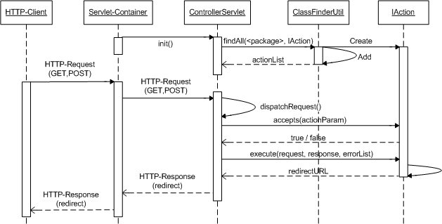

public class ControllerServlet
extends HttpServlet
The MVC2 - Pattern is used to separate the application logic (Controller), the user interface (View) and the corresponding data (Model). The ControllerServlet acts as the controller, the JSP pages implements the view and the BO's (Business Objects) of the framework represents the model.
The main job of ControllerServlet is, to dispatch the requests and to call the corresponding action. And at least, to display the result of the called action in the corresponding JSP page.
|  |
The servlet acts as a central entry point of the application. That means, all actions have to reference the controller servlet via URL.
Example-URL: http://<hostname>:<port>/controllerservlet?action=showProductList
| Constructor and Description |
|---|
ControllerServlet() |
| Modifier and Type | Method and Description |
|---|---|
protected void |
dispatchRequest(HttpServletRequest request,
HttpServletResponse response)
Process the HTTP Get and Post-/Request.
|
void |
doGet(HttpServletRequest request,
HttpServletResponse response)
Process a HTTP Get request.
|
void |
doPost(HttpServletRequest request,
HttpServletResponse response)
Process a HTTP Post request.
|
void |
init()
Initialization of variables.
|
public void init()
throws ServletException
ServletExceptionpublic void doGet(HttpServletRequest request,
HttpServletResponse response)
throws ServletException,
java.io.IOException
request - the calling HTTP Requestresponse - the corresponding HTTP ResponseServletExceptionjava.io.IOExceptionpublic void doPost(HttpServletRequest request,
HttpServletResponse response)
throws ServletException,
java.io.IOException
request - the calling HTTP Requestresponse - the corresponding HTTP ResponseServletExceptionjava.io.IOExceptionprotected void dispatchRequest(HttpServletRequest request,
HttpServletResponse response)
throws ServletException,
java.io.IOException
request - the calling HTTP Requestresponse - the corresponding HTTP ResponseServletExceptionjava.io.IOException
Copyright © 2006-2011 HTWG Konstanz.
Fakultaet Informatik - Department of Computer Science
E-Business Technologien
Prof. Dr.-Ing. Juergen Waesch
Dipl. -Inf. (FH) Thomas Dietrich